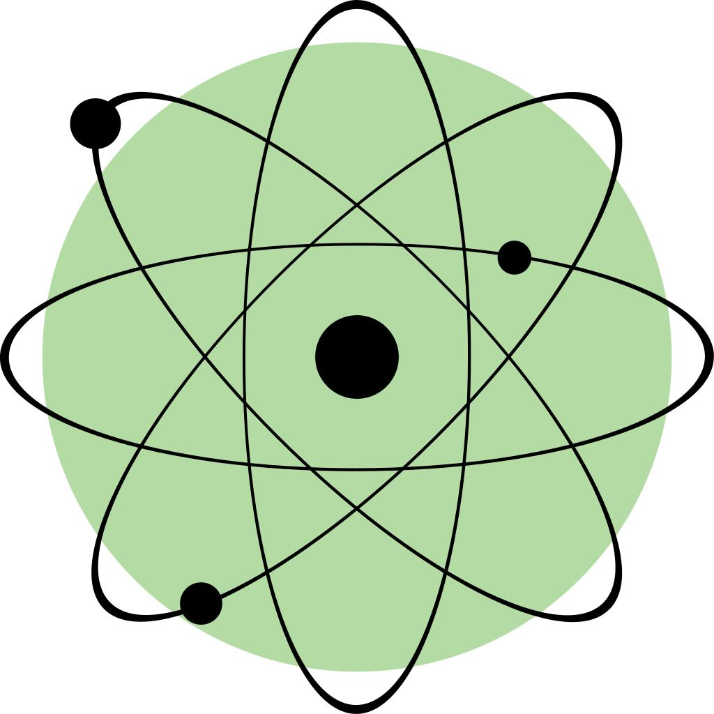
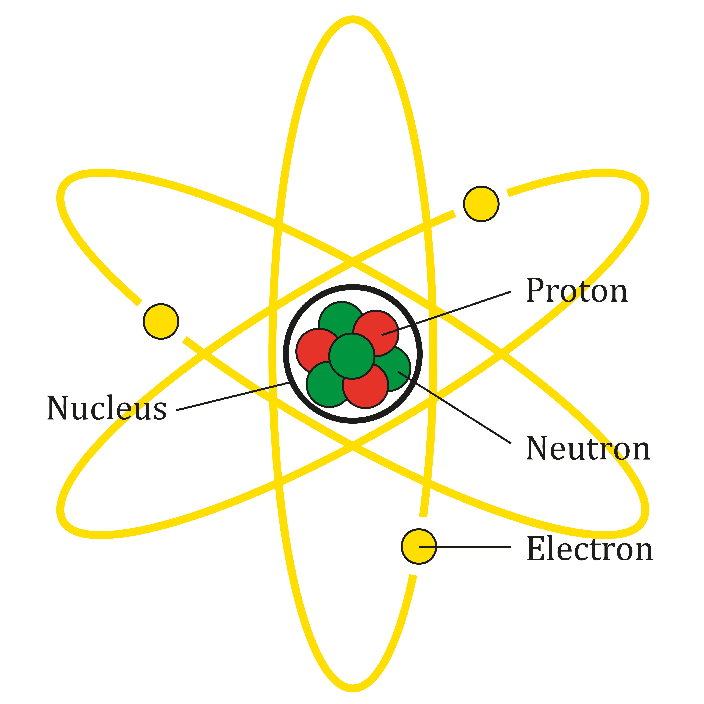
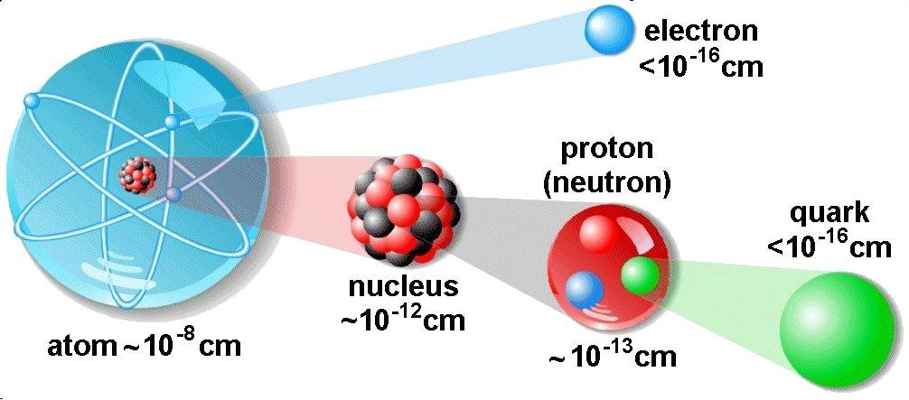

Protons
Positively charged particles found in the nucleus. The number of protons determines the chemical element.
Electric charge: +1
Explore the Science of Matter
Everything around us is made of matter, and atoms are its fundamental building blocks. Discover the tiny particles that make up our universe.
Start Exploring
The Building Blocks of Matter

An atom is the smallest unit of a chemical element that retains the identity of that element. Atoms are incredibly small, yet they form the foundation of the physical world around us.
Each atom contains a central nucleus made of protons and, in most atoms, neutrons. Electrons occupy regions around the nucleus called orbitals.
The number of protons determines which chemical element an atom belongs to. For example, every carbon atom has six protons, while every oxygen atom has eight.
Learn About Atomic Structure →Three Important Particles
Atoms contain three familiar types of subatomic particles. Each plays a different role in atomic structure.
Positively charged particles found in the nucleus. The number of protons determines the chemical element.
Electric charge: +1
Electrically neutral particles found in the nucleus of most atoms. They contribute to atomic mass and nuclear stability.
Electric charge: 0
Negatively charged particles that occupy orbitals around the nucleus. They play a major role in chemical bonding and reactions.
Electric charge: −1
Interactive Learning
Changing the number of protons can create a different element. Changing neutrons can create a different isotope, while gaining or losing electrons changes an atom's electric charge.
Try our interactive atom builder to explore these changes and discover different elements.
Build Your Atom